Finial Project
-
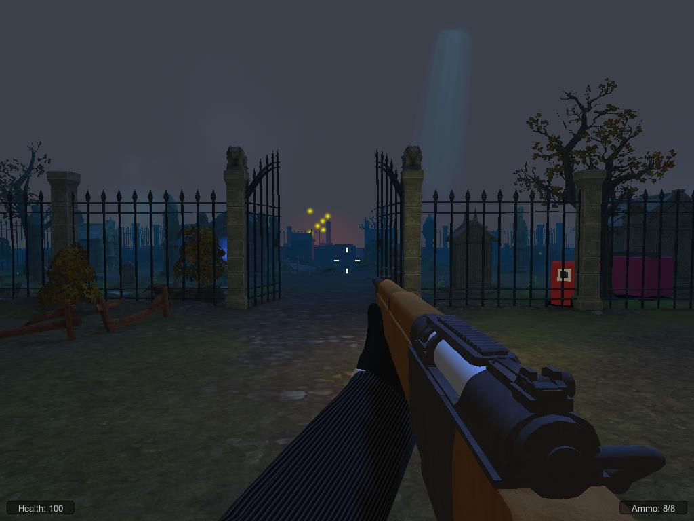
原本在越戰的北國大兵John，在一次越軍的游擊戰攻擊中，遭到手榴彈近距離的爆炸，在手榴彈強力的震波下，John只覺眼前一黑，並不省人事了，他下一次睜開眼時，發現自己並沒有死，更神奇的是，身上連一點傷都沒有，就當他正想研究到底發生了甚麼事時，奇特的生物對他發起了攻擊，John來不及細想，只知道，想要了解自己身上到底發生了什麼神奇的事，就必須拿起槍，活下去……
01_GunGame
-

金幣神給了貧窮忍者一個機會，讓他找出金幣神藏起來的金幣，於是貧窮忍者就利用他鍛鍊出來的技術，踏上了尋找金幣之路。
02_Coin Ninja
-
 希望將平面的炸彈超人移到3D形態，形態，炸彈和走位及視角都3D化
希望將平面的炸彈超人移到3D形態，形態，炸彈和走位及視角都3D化03_Pipes Bomber
-
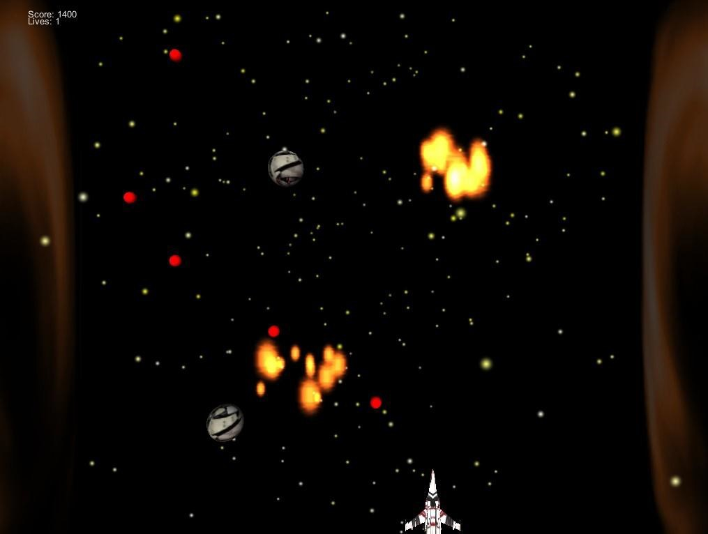遊戲背景為太空，西元2013年，星際要犯John，駕駛F72戰機越獄，地球總部第二要塞收到通緝命令，編號23銀河站影Pada駕駛F76戰機前往將其討伐，必須擊敗星際要犯，才能守護宇宙的和平，駕駛者!維護星際的和平就交給你了。
04_太空射擊
-
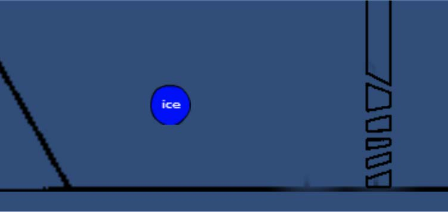H2O遊戲規則：我們的遊戲是一款橫向動作冒險遊戲，在故事中玩家必須扮演一顆小水滴，運用自身變化"三態"的能力與特性來解決路途上的各種難關
05_H2O
-
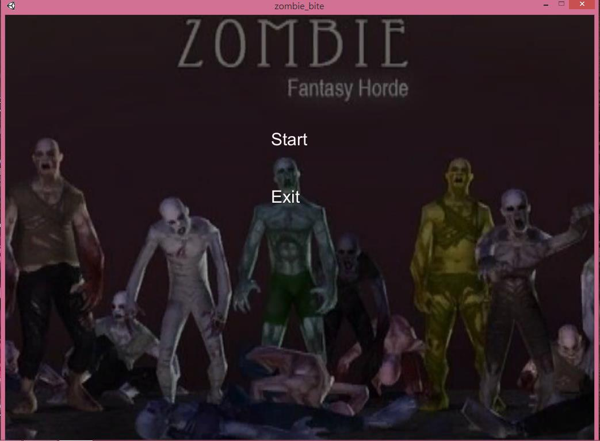很久很久以前，有一個古老的傳說，只要人類在每10年才有的日月日當天，到陰森墓地中竊取其中一個墓裡面的東西，拿回來放在家裡，就可以榮華富貴，但是一旦你失敗，你將會成會墓地中的一個成員，你準備好了嗎？來接受考驗吧
06_ZombieAttack
-
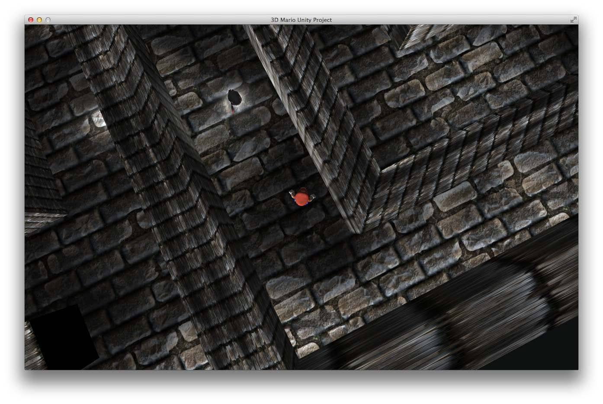Mario在拯救公主的過程中，被魔王流放在地下迷宮中，為了要拯救公主馬力歐必須要想盡辦法走出迷宮。
07_MarioMaze
-
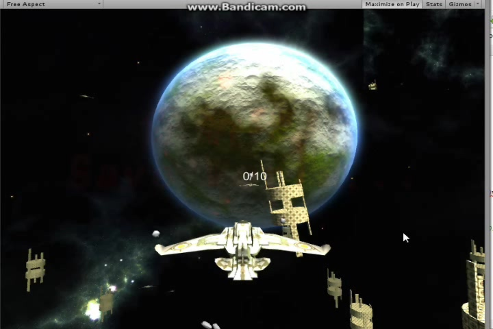公元2038年，航太科技蔓延宇宙，世界強國征戰侵略各大星系，為爭奪、為生存，爆發首次宇宙大戰!資工系少年”阿鳴”決心終止這場無謂的戰役，為了維護星系間的和平、締造人類的福祉，阿鳴獨自登上戰機，出發，航向外太空……。
08_StarTrooper
-
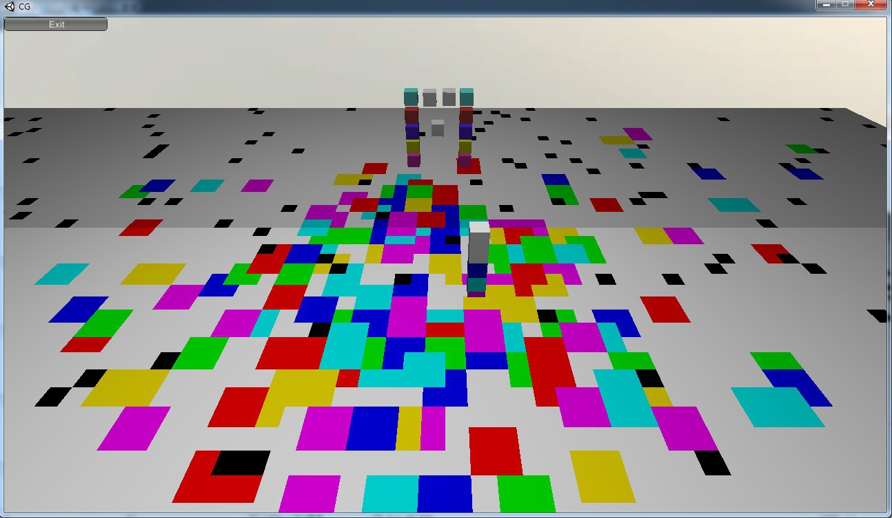再空白無物的地圖上,灑出漂亮絢麗的顏色,當人物與門的顏色一樣時,即成功過關，基本上是一個光靠看就讓人覺得開心的遊戲
09_Scolorsh
-
 坦克回合製遊戲，每回合可以移動及攻擊，移動有限制距離，每回合只能攻擊一次，遊戲中有一方血量歸零即遊戲結束
坦克回合製遊戲，每回合可以移動及攻擊，移動有限制距離，每回合只能攻擊一次，遊戲中有一方血量歸零即遊戲結束10_Crazy Tank
-
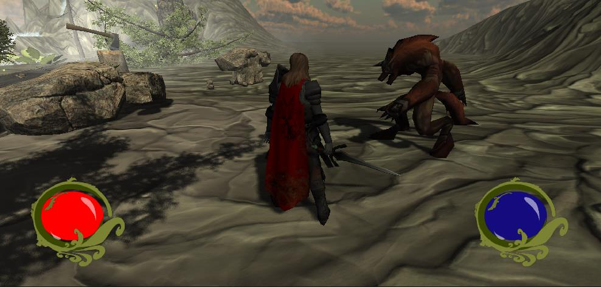千年前歐洲大陸上，有個洞穴隱含著龍族的秘密，相傳只有龍之子才有辦法找到那神秘的疑問，沒有人知道這是不是真的，起先人們趨之若騖的奔向這片沙漠，而現在卻再也沒有人敢踏進這塊荒蕪的沙漠，踏足過這片沙漠的人，如今都已消失匿跡，龍族的秘密壟罩在這片詭譎的沙塵暴之中，到底有誰能夠揭開他真正的面容，而失蹤的人們究竟又是為了什麼原因而消失在沙漠中，而誰才是傳說中的龍之子呢？……
11_勇者鬥惡龍EX
-
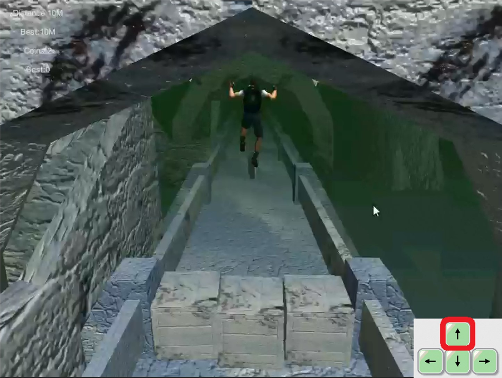你來到一個古代冰宮，得到寶藏後，不小心觸發了毀滅的陷阱，現在你要盡可能的跑越遠越好，免得崩塌波及到你！
12_冰宮逃跑者
-
 神秘的能量方塊突然出現，矗立在厄薩斯山峰的一座險峻的高山，擎天峰上，它釋放的能量正逐漸將地球與太陽的距離拉近，已經來不及查明對方是什麼來歷了，更迫在眉睫的是必須將它擊落，於是聯合政府派出秘密研究機構殲滅機，超高熱壓縮對艦炮戰機，勢必將它擊毀！但是充滿未知數的方塊又會有什麼反擊呢？地球的存亡就掌握在你手！別再猶豫，我們需要憑藉你那優越的駕駛技術，拯救地球的未來！
神秘的能量方塊突然出現，矗立在厄薩斯山峰的一座險峻的高山，擎天峰上，它釋放的能量正逐漸將地球與太陽的距離拉近，已經來不及查明對方是什麼來歷了，更迫在眉睫的是必須將它擊落，於是聯合政府派出秘密研究機構殲滅機，超高熱壓縮對艦炮戰機，勢必將它擊毀！但是充滿未知數的方塊又會有什麼反擊呢？地球的存亡就掌握在你手！別再猶豫，我們需要憑藉你那優越的駕駛技術，拯救地球的未來！13_Hephaestus Plane V.S Cube Allspark
-
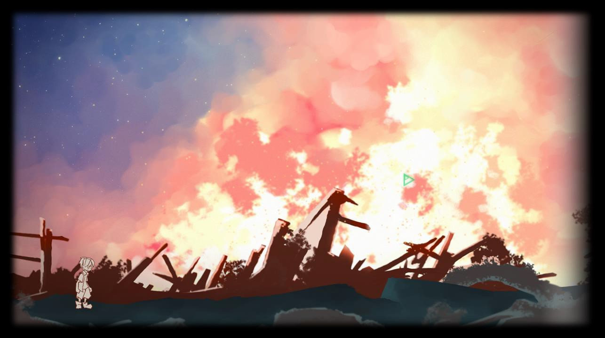本遊戲結合了解謎、動作、RPG的精華，Puz博士的實驗計畫將會是遊戲的主體，整個實驗室可以自由找尋材料，用以組合升級套件。在遊玩的同時，關卡中的物品以及劇情會漸漸揭露整個事件的來龍去脈，身歷其境的設計使你欲罷不能。任務中必須運用科學、數理常識來度過難關，更有許多邏輯性的思考，同時也考驗你的反應力與操控力。準備好大顯身手吧！
14_Dr.Puz&Newman
-
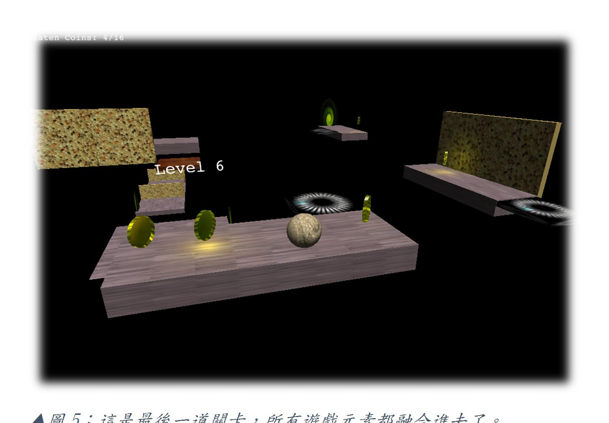膠皮因為期末將至，每天都唸書唸到很晚，有一天在睡夢中，他發現自己來到了一個異次元世界，為了離開夢境，他只好利用自己僅剩的意志，去操控他眼前的球抵達回到現實之門。
15_Balance